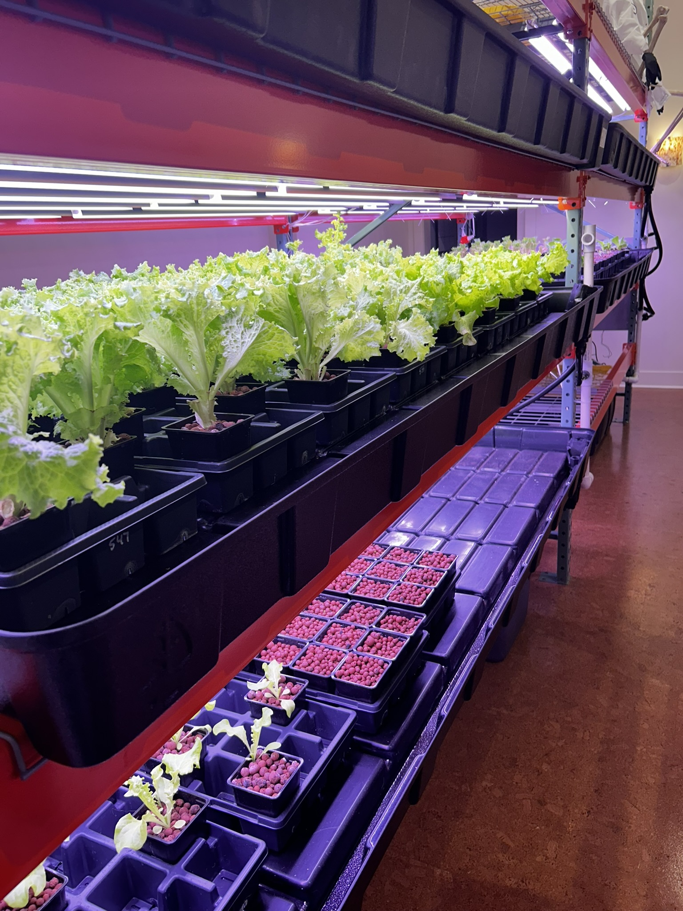

CSA
If you want to eat fresh local lettuce, microgreens, and herbs—and support Plant Lab as part of our neighborhood food system—our CSA share is for you. A share will contain varying types of microgreens, shoots, cooking greens, culinary herbs, and leaf lettuces. Shares are packed for you to pickup at your convenience at the farmstand, which is typically open each week on Tuesday, Wednesday, and Thursday, 9am-9pm.
Get More Info &Sign Up Now
